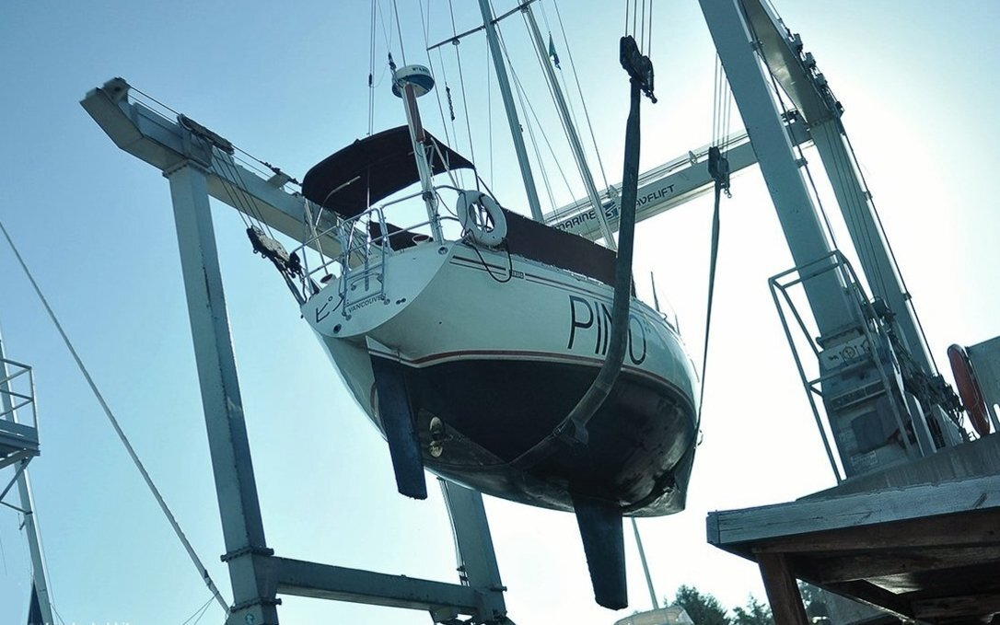

hauling out
Tasks like hauling-out (to get the bottom painted) is necessary once every 2-3 years for an offshore boat, but can be every year. How often you haul out depends on your personal preference(and the size of your wallet).
When out of the water, don't forget to...
- Check your cutlass bearing (push up on the prop to see if there is any play, there shouldn't be).
- Grease the inside of your prop(if you have a fancy feathering prop).
- Replace the boat zincs (shaft, hull(if any)).
- Replace or service your shaft and/or rudder seal. Dripless types need to be replaced out of the water, because it is necessary to undo the engine coupling to pull back the shaft to remove, and insert a new bellow(see propeller maintenance to see our dripless seal replacement).
- Check the hull for blisters.
Bottom paint: If the goal is to wait longer between haul-outs, paint more coats (2-3), otherwise aim for 1 coat every year. We use high-copper ablative anti-fouling. Ablative wears out over time, overtime it becomes less effective at repelling sea critters. Eventually, stripping the bottom of all paint down to the gelcoat is necessary, paint can build up and the older layers will start to flake off, making it difficult for new paint to adhere to the bottom. If painting the bottom from gel coat, adding a layer of primer is necessary so that the antifouling paint can adhere. We have no experience with Coppercoat, or hard bottom paint.

Strut and prop: Coating your prop and strut with PropSpeed (see image above) works well to keep growth off, it works well in high-growth areas (we used it in New Zealand and Japan) but it is very expensive. Sailors often buy the product to share with others to keep costs down. There are also zinc-based sprays, or paint, that work quite well. See propeller maintenance if you want advice on maintaining a feathering propeller.
If your boat comes out of the water for a haul-out every year, a cheap alternative is to coat metal with zinc cream(penanten) or anhydrous lanolin(reported by others). Both products are available at the pharmacy. Note that neither last very long in the water.